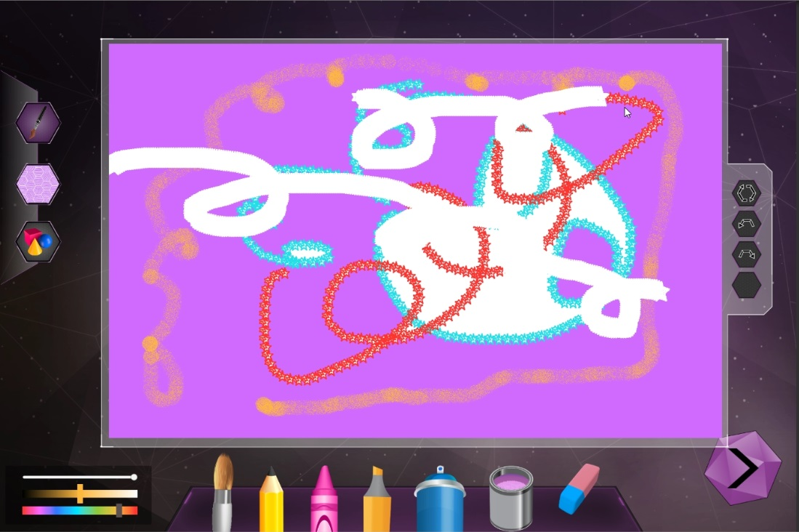

A fun project where I had to developed a drawing game on unity. that a decent number of features which made me have to develop native plugin using C++.

so my plan when I started developing the paint features was to implement everything in c#. but I face a problem when testing the fill algorithm which was too slow when filling large area and it was aparent that the problem was not in the algorithm it self but c# itself is too slow. so I had to fall back to c++ and made plugin for unity with it. and the result was amazing it much faster. and that was the start of implementing all the remaining features in c++.